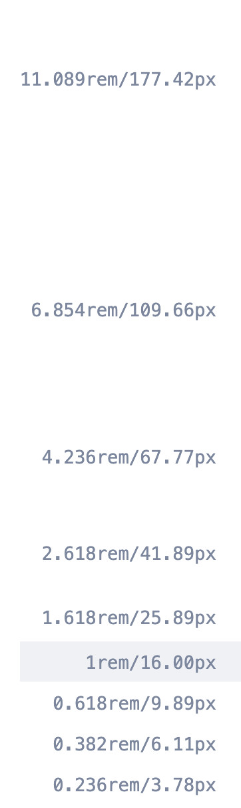
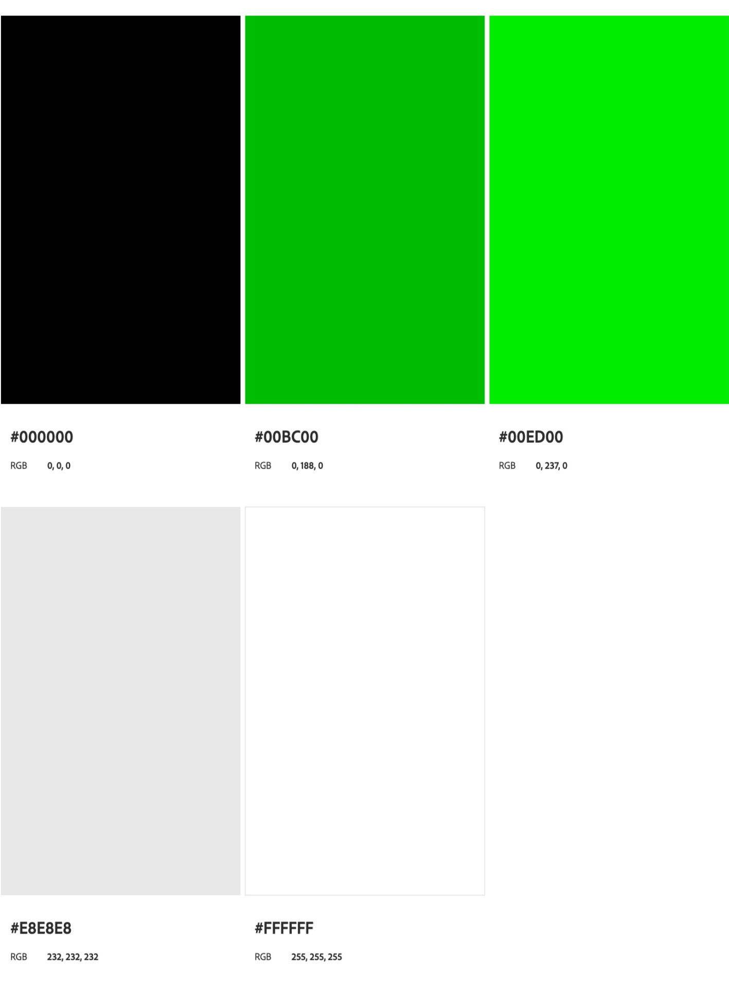

The style I'm going for is clean, modern, and minimalistic.
A minimal look allows the viewers to focus on the focal point of the topic and the lesser number of contributing elements. In this case, the focal point is the inequality in park accessibility, and the 2 contributing elements are high-income neighborhoods and low-income neighborhoods. With a simple, easy-to-navigate layout, a structured typeface, and a monochromatic color palette, the audience is presented with a clear and concise, focused experience.
The flow of the project is also improved tremendously thanks to this design choice. Instead of being bombarded with options and informations, the audience is allowed to breathe and further engage in reading/ watching/ listening. Thus hope to retain the audience's attention and engagement.
For typography, to compliment the minimal look, I'm going with the font “Archia.” This font was made by the Atipo Foundry and has been used to format the descriptions of several art exhebitions at the Gugenheim Museum. This font brings the interplay between structure and style. It is artsy and unique, yet also brings a form of solidity and a feeling of trust-worthiness.
To amplify this structure, I'm applying the golden-ratio (1.618 : 1) to the different sizes of heading and paragaphs in my design. (h1:h2 = 1.618:1 and so on)
Minimalism is about stripping down the clutter and the distractions. By making room for things that matter, we get to focus more on the topic at hands. The same design philosophy applies to my Color Palette. Through the use of a Monochromatic Harmony Rule, I'm hoping to limit the user focus.
All 5 primaries are different shades of Green, creating a sense of freshness and elegance, with a very strong association to nature and peace. Despite the primary shade of the palette being green, it is my intention to limit the use of colors to only pure Black and White. These two colors represents the highest of contrast, which goes along with my project's theme - Separation and inequality. They also brings a degree of moderness, seriousness, and most importantly, an attempt at a 'wow' factor.
The design of this project was idealized through Figma. Access can be found through the following link: Park Accessibility Figma Design .